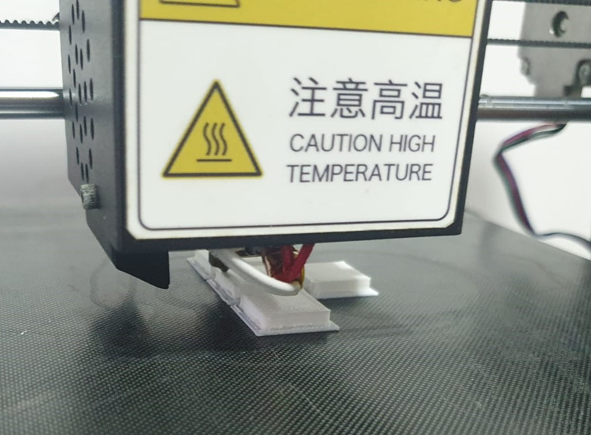
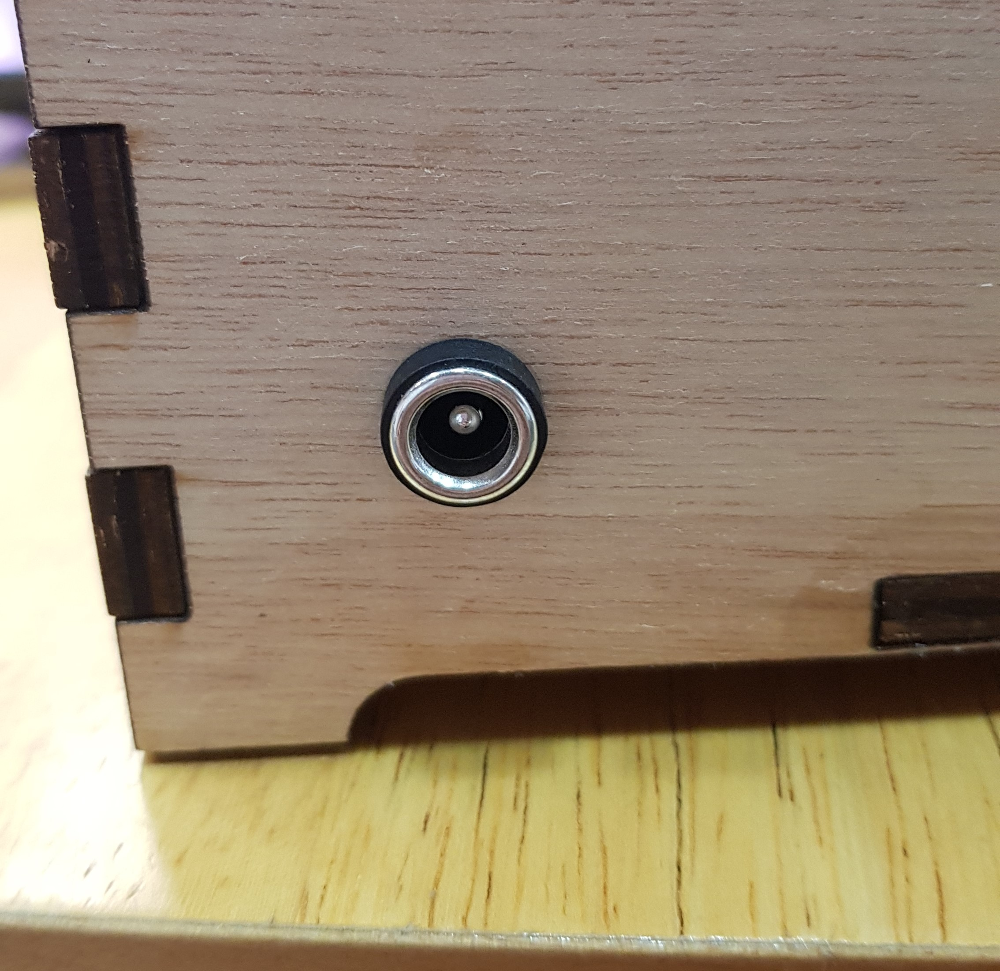
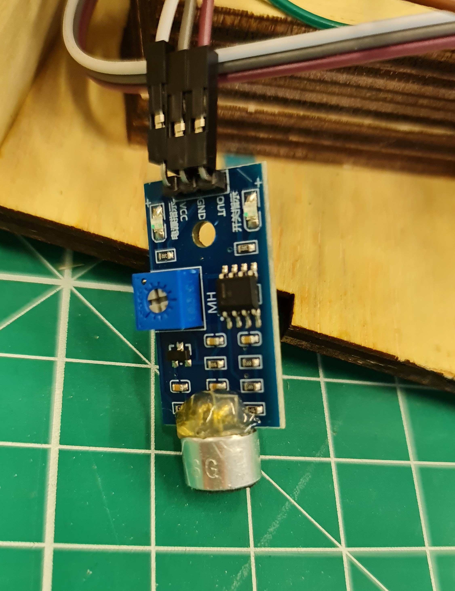

Sketch
During the initial planning phase of the project, I made this sketch of my final project. This sketch shows the initial plan for my project.
 |
3D Modeling
To make the lamp, first I used Fusion360 to create 3d models of the parts I needed.
Box
The box was made using a similar method as the 3d cut box here. Instead of the moving lid, I used a solid top for the box, and cut out space for the acrylic and the button holders. The box would also have a raised base, and the base piece will fit into slots on the bottom of the side pieces. These are the parameters I used for the box.
And here is the completed box.
Acrylic
The width of the acrylic that fits into the lid was fixed at 100mm, and the widest part of the acrylic is 120mm, which is not listed in the parameters. The thinest part of the acrylic was made long enough to reach the LEDs that would be on the base of the box. To hold the acrylic in place, I used a series of wood pieces made to the width of the acrylic and stacked them up. I also specifically made one piece with a wider center to fit the LEDs in, and make sure it is centered below the acrylic.

The image to be engraved onto the acrylic is an image of some musical symbols I found online
Buttons
For the model for the button holder, I used this source as a reference. I then used the reference and measurements of the buttons to make a modified model that can fit 4 buttons intead of 3. In the base piece for the button holder, I made 4 holes to fit the small button switches and left holes to fit the pins through. I also made sure the cover piece has room for the button switches.
3D Printing
The pieces that had to be printed were the buttons. I exported the .stl files for the button holder from Fusion360 and used Cura slicer
to prepare it for printing. These are the settings I used.
- Material: Generic PLA
- Nozzle: 0.4 mm
- Layer Height: 0.2 mm
- Wall Thickness: 0.8 mm
- Infill: 20%
- Print Speed: 80 nm/s
- Temperature: Default
- Supports: No
- Base Adhesion: Brim
- Brim width: 10
To save time, I placed all the pieces together to print at once, and set the brim smaller. Below are some pictures of the printing process. The body of the button holder was printed
by the Ultimaker Cura 2+ avaliable in the lab, and the buttons were printed by a friend's printer.
|  |
Laser cutting
The main body, the acrylic piece, and the wooden holders for the acrylic were made using laser cutting. For the body and holder, I used 5mm plywood, and I used 5mm clear acrylic for the lamp. To prepare my model for cutting, I set the parameter for wood thickness to 5 in Fusion 360 and exported the sketch of each piece I needed as a .dxf file. I then used LibreCAD to combine the sketches in preperation for cutting in the lab.
The print settings used for laser cutting were as follows.
Speed: 5%
Power: 95%
Frequency: 30%
Thickness: 5mm
For the engraving, I used the default settings. Air assist is used for the cutting. Below are some pictures of the cutting process. The pieces had to be moved around due to the
constraints of the material used.
Code & Wiring
The code for this project was referenced from this GitHub repo for a similar project. Instead of the colour changing based on the sound frequency, I made the lights shine in a rainbow that moves according to the sound. The code for the lights speficially is taken from the rainbow function in the button cycler test here.
The loop_num defines the number of times sound is sampled from the surroundings, and sound_tresh and brightness are variables that can be changed by the buttons. brightness defines the brightness of the LEDs and is initially set to the maximum brighness of 255, and the minimum it can go is 100. sound_tresh shows the lowest volume that can be picked up by the microphone. It is initially set to 50 and has a minimum of 0 and a maximum of 100.
The pins numbers are defined at the start. The microphone can be connected to any analog pin, and the LEDs and buttons can be connected to any digital pin on the Nano. In the beginning, I used an Uno and a breadboard to test my code and wiring. Afterwards, I transfered my connections to the Nano and a mini breadboard. For this change, I needed to change some of the wires to fit the Nano, and move some of the connections around to fit into the box better.
In the sketch below, a potentiometer was used as a place holder for the sound sensor as it was not available in TinkerCAD
For coding, instead of the Arduino IDE, I used PlatformIO on Visual Studio Code to program my arduino. I chose this because I was more familar with the UI of VSCode and I did not have to install another program to use it.
Assembly
To find the locations for the power socket and hole for the microphone, I first assembled the box with tape and placed the acrylic through to see if how much room I had to put the electronics. I then marked out the locations for the mic and the power socket and used a drill to make hole for them. The power socket I used was a cabinet mount, so I only had to drill a hole large enough for the back of the socket. The hole drilled for the mic was too small, so I used some sandpaper wrapped around a pencil to widen the hole.
|  |
To put together some of the wiring, I soldered wires to the buttons, the power socket, and the LED strip to connect them to the breadboard and arduino.
However, some of my initial solders were not secure and the wires would break off after some time. To fix this, I tried using hot glue to protect the wires and put shrink wrap on to ensure that it is more secure.
I used some glue to put together the acrylic holder pieces and some sides of the box together. I left the top and one side of the box open in case anything needed fixing. I then placed all my electronics in the box to put everything together.
The mini breadboard had a sticky back, so I cut off strips along the sides to stick it down to the base of the box. To hold the microphone in place, I used some hot glue. However, after gluing the mic in place, the connections between the mic and the board broke off.
To fix this, I soldered it back and added hot glue to secure the loose joint.
Power
The DC power socket is connected to the VIN and GRN pins on the Nano, and is used for power. A female DC power cable can be plugged into it to power the electronics.
The sides of the box left open for fixes are the right side and the top, and they are held in place with tape. The wooden holder for the acrylic piece is stuck loosely with double-sided tape in order to check on the LED stuck inside it in case of issues. The button panel is stuck into its space quite firmly, but is also removable with some force.